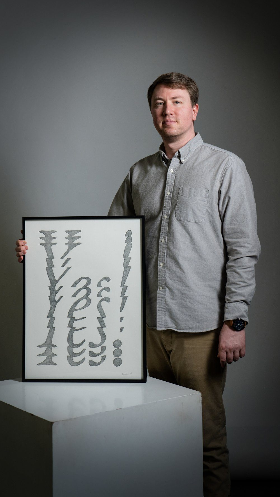

Ryan Erickson
Erickson’s work has been exhibited at institutions such as the Flag Art Foundation (NY), the NARS Foundation (NY), and the Kemper Art Museum (MO) and featured in international film festivals, including the Around Film International Film Festival (Berlin). He holds an MFA from Washington University in St. Louis and a BA in Art & Design from the University of Northern Colorado. His work has received numerous awards and grants, including the John T. Milliken Foreign Travel Graduate Award, and was recognized as a finalist for Best Experimental Film at the Around Film International Festival. He has presented lectures at institutions such as Washington University in St. Louis and performed readings at Tiger Strikes Asteroid (NY). His work is included in the Director’s Collection of the School of Art and Design at the University of Northern Colorado.
I make paintings, drawings, and films that look certain but quietly aren’t. A painting might pair a simple image with a few words that don’t actually explain it, or place objects in a scene that leaves out the one detail that would resolve it. A film might follow a logic that makes total sense while you’re watching it and none at all once it’s over.
I’m interested in how easily we accept things as true once they’re named, labeled, or declared. Once something is stated with enough confidence, most people stop questioning it. My work slows that process down so you can see it happening. You may end up believing it at face value, or laughing at it, or both, unsure of which reaction is right.
I use simplified images and plain language to catch you in the moment right before you decide to believe something.